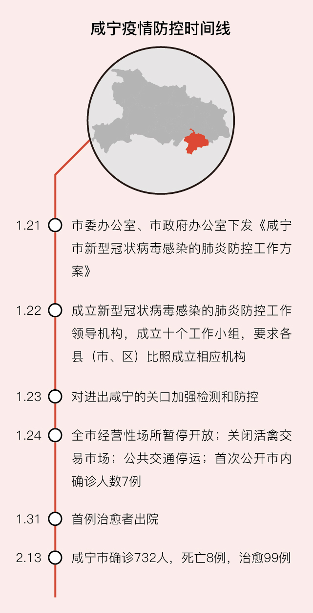

特别报道|艰难的“清零”
原文链接 备份链接 “我们社区的最后一名确诊病人今天终于住进医院，总算完成一项‘清零’任务。”2月13日17时接到电话，武汉江汉区的社区书记王建军长长地嘘出了一口气。 电话是社区一位患病的爹爹从医院打来的，他和患病的老伴在武汉红十字会医院 …
封面报道之治理篇：
孝感：如何夯实乡村防火墙？ | 鄂州：考验疫区网格员 | 襄阳：最后的出口 | 潜江：汪洋中的一条船
在湖北省咸宁市下属的崇阳县，40多岁的天城镇四级主任科员罗浩，被当地医生戏称是全县最了解疫情的人。
人们说：“如果见不到罗浩了，只能说明两种情况：一种是疫情控制住了，一种是罗浩倒下了。”
“大年二十七（1月21日）晚上，天城镇的领导召集开会部署防疫工作。第二天，医院提供了一辆金杯车，但领导说没有司机，我就上了。”罗浩说。他的任务是运送镇上发热或者身体不舒服的病人去医院检查。
崇阳县位于咸宁南部，经济较为落后。全县主要人口及两个新冠肺炎定点医院均位于天城镇，由于县城交通几近停滞，罗浩开的7座金杯车成为天城镇疑似病患和医院之间惟一可用的“交通工具”。
1月22日，罗浩开上金杯车的那天起，崇阳县的防疫工作才算正式开始。当日下午3点，崇阳县县委县政府组织各县直单位开会，同时宣布成立新型冠状病毒感染的肺炎防控指挥部，宣布咸宁市除通城县外5县市区均出现疑似病例，崇阳4例疑似病例正在送检。
咸宁市在武汉市东南方，是湖北省的“南大门”，湖南、湖北、江西三省在咸宁交界。由于咸宁市紧邻武汉，当地由温泉带动的旅游业又较为发达，常被称为“武汉的后花园”。
此次疫情来袭，“后花园”目前免于重灾。在湖北省16市中，咸宁市确诊人数一直处于第11位左右的位置。在紧邻武汉的7个市中，咸宁市常住人口250万左右，截至2月13日24时确诊人数累计732人，仅多于人口仅咸宁一半的仙桃，成为武汉周边难得的例外。
“咸宁是劳动力输出型城市，而且多是往南部湖南、广东打工，人口本来就少，人口密度也小。”当地居民对于咸宁没有成为“重疫区”并不意外。
公开资料显示，咸宁市9752平方公里仅250万左右常住人口（256人/平方公里），人口密度仅黄冈的五分之三，孝感的二分之一，武汉市的五分之一。
崇阳县人民医院消化呼吸科主任聂新强则告诉财新记者，每年12月医院都会启动冬季传染病防治系统，成立领导小组及专家会诊救治小组，当时医院相较平时就已经提高了防护级别：“1月20日钟南山说新冠肺炎人传人后，我们自己也比较警觉，接诊的时候穿上了防护服。”
县城防疫工作统一展开后，他科室的医生护士被抽调了一半去县里另一家民营医院：“县里征用了准备年后开张的颐和医院做第二家定点医院，医生护士从其他医院抽调。”
县人民医院和颐和医院确定为定点医院，天城镇所有发热病人均去这两家医院的发热门诊就医。“县人民医院专家组有5个医生。每天要去发热门诊排查、观察疑似患者的病情、轻症患者的治疗情况、为重症患者设计治疗方案。目前，所有重症患者都是按照国家卫健委的治疗方案，由专家组一起商量着来治疗。”聂新强介绍说。
咸宁市由6县（市、区）组成，新冠肺炎疫情防控实行属地管理，当地病患在当地确诊、当地治疗。各区县防疫工作也由各县级防控指挥部落实。
崇阳的防控也属按部就班。1月24日，崇阳封县，全县居民严禁出门。全县经营性营业场所关门。县城内在交通要道卡点，以社区和村为单位分配给各县直单位负责管理。同时，县防疫指挥部也开始部署各县直属单位进入其分包的社区和村，进行发热病人排查。
罗浩记得，腊月二十八（1月22日）到大年初四（1月28日）是他最忙的日子。“每天早上7点开始，要在疑似病患家和医院之间来回十几趟，凌晨两三点才能睡下。第二天接送人员又是一样的频率。”
罗浩解释，虽然县指挥部派了10辆出租车供居民急用，但出租车并不愿意载发热病人。因此，罗浩送疑似病人到医院后，得等CT检查结果出来，才能离开，因为部分病人需要回家隔离观察。
因为知道每个病人的检查结果，他还承担起了天城镇每日疫情数据汇报的工作。
最开始的5天最繁忙，而罗浩的防护装备只有一只口罩。“我坐在驾驶座，又不跟病人密切接触。注意少说话也没啥大事。”罗浩说。
由于不能回家，罗浩每天就住在单位宿舍，吃饭就吃方便面。“三十晚上，我让老婆煮了碗饺子放在门口。我拿着边吃边下楼去接了个病人。”
由于发热病人还是对隔离有焦虑和害怕，罗浩开始劝说安慰这些病人：“一位本打算出门旅游的疑似病例，在出城的路上被检测出发烧需要隔离。我就劝他，你就想象自己出去旅游遇上天气不好要住酒店，而且这个酒店住14天都免费。”
最近几天，罗浩忙得比较开心：“因为刚过年集中送了很多人去隔离，到现在差不多14天，可以送很多解除隔离的人回家了。”
截至2月13日24时，崇阳县确诊70例，死亡1例，治愈11例。咸宁市确诊732人，死亡8例，治愈99例。

相关报道：
此文限时免费阅读。感谢热心读者订阅财新通，支持新闻人一线探求真相！成为财新通会员，畅读财新网！
更多报道详见：【专题】新冠肺炎防疫全纪录（实时更新中）
[《财新周刊》印刷版，各大机场书店零售；按此优惠订阅，随时起刊，免费快递。]
原文链接 备份链接 “我们社区的最后一名确诊病人今天终于住进医院，总算完成一项‘清零’任务。”2月13日17时接到电话，武汉江汉区的社区书记王建军长长地嘘出了一口气。 电话是社区一位患病的爹爹从医院打来的，他和患病的老伴在武汉红十字会医院 …
原文链接 备份链接 **【财新网】（记者 萧辉 包志明 高昱 ）** “我们社区的最后一名确诊病人今天终于住进医院，总算完成一项清零任务。”2月13日下午5点接到电话，武汉江汉区的社区书记王建军长长地吁出了一口气。 电话是社区一位患病 …
原文链接 备份链接 Original 霍思伊 杨智杰 中国新闻周刊 中国新闻周刊 WeChat ID chinanewsweekly About Feature 这里是《中国新闻周刊》掌门周刊君，影响有影响力的你。和我一起拨开迷雾，追寻真 …
原文链接 备份链接 从医17年， 作为武汉三甲医院急救中心医生的李春觉得自己“从来没有这么无助过”。 图 | 视觉中国 他在临床接触过各种各样高传染性的疾病，从没怕过。但当他得知自己被确诊为新型冠状病毒感染的肺炎，并随后传染给妻子、两个 …
原文链接 备份链接 记者/韩谦 编辑/计巍 宋建华 *正在进行康复训练的被感染医生陆俊* *1月29日，在经过两次核酸检测均为阴性后，陆俊从金银潭医院ICU转回同济医院普通病房治疗。*他目前仍存在呼吸困难的症状，需高流量吸氧治疗。*陆俊表 …